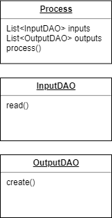

Key Concepts¶
System Design¶
The goal is to create a scalable design, one where new algorithms are easily added without worrying about the implementation details behind where these algorithms get input or store output. To this end, we revolve our system around three objects.
{kind=link}
Note
InputDAO: An abstract interface that is able to read from some datastore.
Warning
OutputDAO: An abstract interface that is able to write to some datastore.
Danger
Process: At its core, what a process does is take input, process that input, and spit out an output. The Process object is modeled based on that idea. It has input and output fields, which are respectively InputDAO and OutputDAO objects. There are process methods that run the algorithm on the input. The result can then be stored into the appropriate data storage via the output Datastore interface.
Design Approach¶
The motivation behind this design is that we want a system where we can add new classes of algorithms/processes without too much overhead or risk breaking what’s already been implemented.
How Issues Are Addressed¶
Addressing the issue of excess overhead, we have a Process abstract class that future classes of algorithms can extend. These new Process subclasses automatically gain useful features such as the ability to access various datastores, without us having to write additional code.
Addressing the issue of breaking what’s already been implemented, the design decouples Processes and the data upon which they operate on, in accordance with the Dependency Inversion Principle, which emphasizes that we should program with abstraction in mind. Programming with abstraction in mind means that our code does not care about the implementation details of a given object. All we care about is that the object gives us the operations that we need. The consequence is that, any time operation details need to be changed for that object, we do not have to change and risk breaking client code.
To accomplish this, the idea of abstract interfaces is used, as well as the Data Access Object Design Pattern, which abstracts away datastore operations such as “read” and “create” with their concrete implementations(and so we have InputDAOs and OutputDAOs). The result is that Process objects no longer needs to worry about how operations such as inputting or outputting data to a datastore works. Thus, Process can use different types of datastore as input or output without ever having to change its code, resulting in code that is more scalable since we no longer risk breaking the Process code whenever new datastores are introduced.